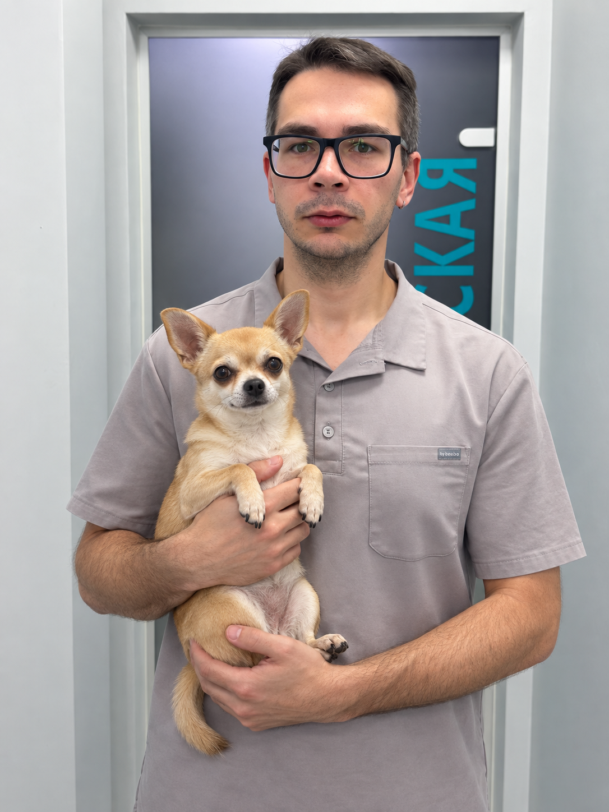
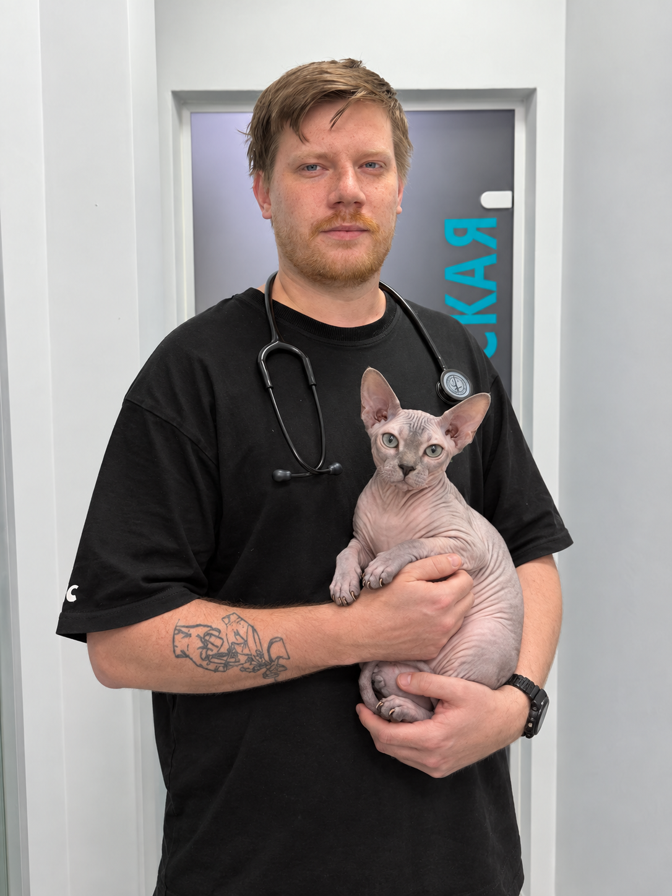

Филимонов Эдуард Александрович
УЗ-диагност, кардиолог, пульмонолог · Приём по средам и пятницам

УЗИ органов и систем, рентген, кардиологическая диагностика и экстренные протоколы AFAST/TFAST — круглосуточно. Анализы доступны 24/7: общий и биохимический анализы крови, ПЦР на парвовирус/панлейкопению, коронавирусный гастроэнтерит, лямблиоз, трихомоноз, пироплазмоз и калицивироз.

УЗ-диагност, кардиолог, пульмонолог · Приём по средам и пятницам

Анестезиолог, специалист ОРИТ, УЗ-диагност, гастроэнтеролог
Санация параанальных желёз и стрижка когтей — по желанию владельца.
Санация параанальных желёз и стрижка когтей — по желанию владельца.
Санация параанальных желёз и стрижка когтей — по желанию владельца.
Санация параанальных желёз и стрижка когтей — по желанию владельца.
Уточняем состояние и цель обращения.
Проводим необходимые исследования и обсуждаем варианты.
Согласовываем действия и стоимость до выполнения.
Контролируем результат и остаёмся на связи.
До вмешательства согласуем базовый состав и стоимость. Итог может зависеть от состояния пациента, веса, анестезии, расходных материалов и дополнительных исследований.
Ночные вызовы узкого специалиста: 6 000 ₽; вызов операционной бригады — 15 000 ₽. Остальные условия администратор уточняет до визита.
В отзывах владельцы отмечают спокойное обращение с животными, подробные объяснения и связь после приёма.
Часто упоминают согласование обследований, прозрачное обсуждение следующих действий и стоимости.